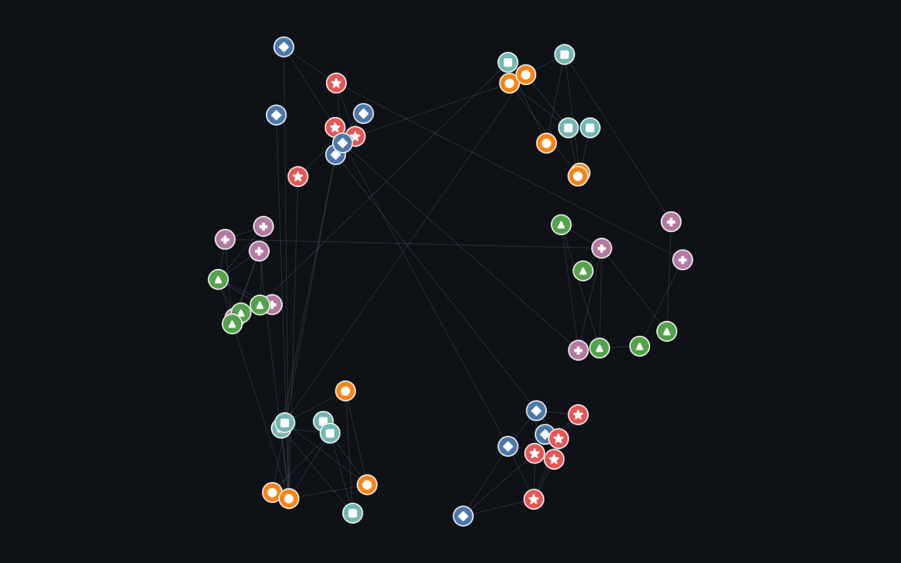
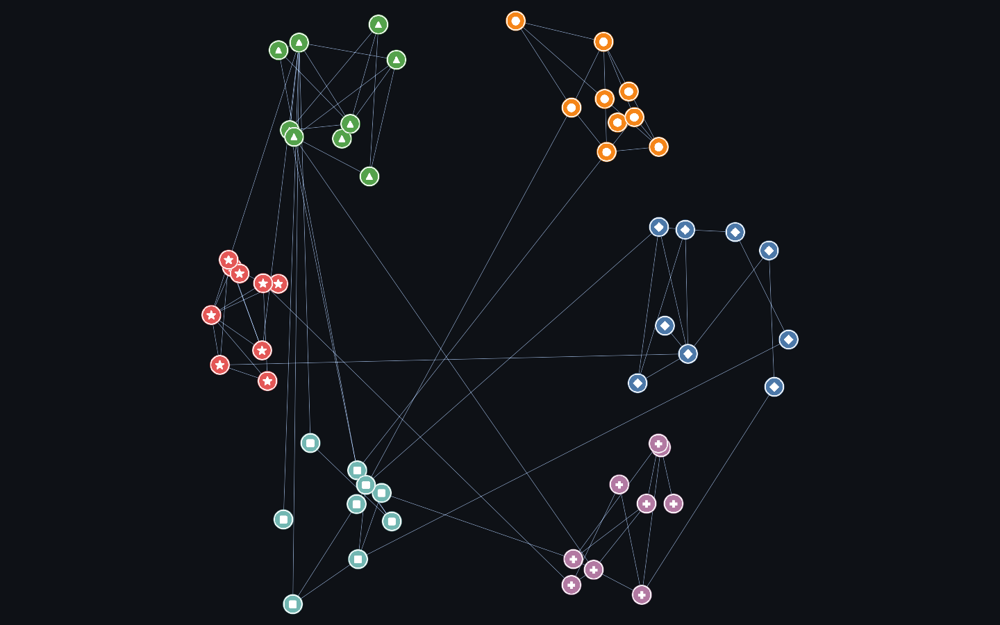
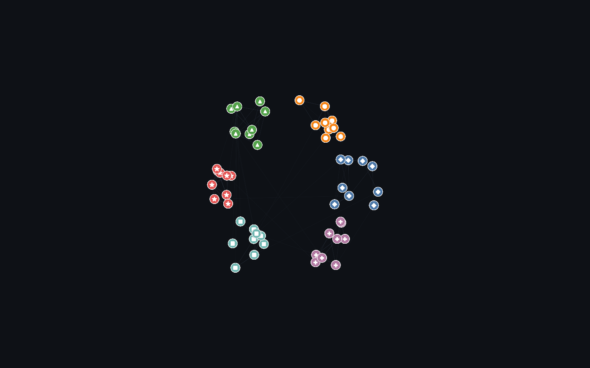
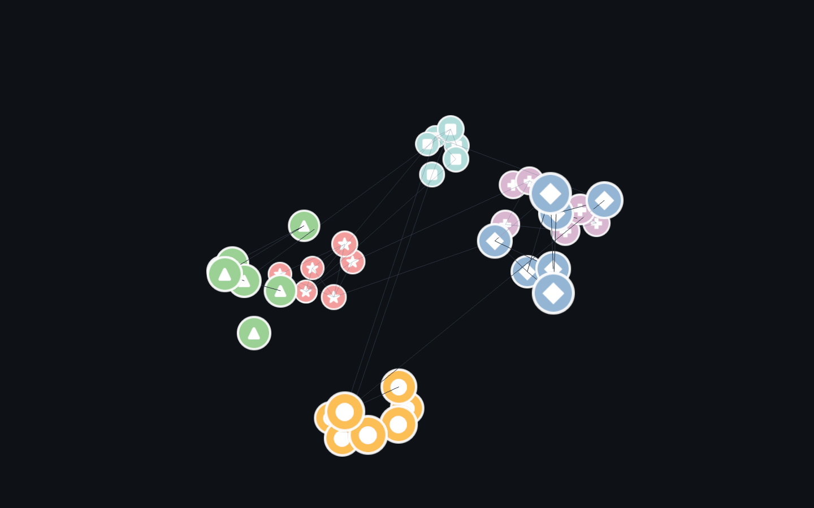

Per-node icons / avatars or ringed borders. Native in deck.gl (IconLayer), a Sigma plugin; the uniform-GPU-point renderers don’t offer per-node images.

Rendered on the real GPU and gate-verified — it draws, and the pixels change when the camera moves (not a frozen frame). Held 120 fps at 54 nodes / 86 edges.

Rendered on the real GPU and gate-verified — it draws, and the pixels change when the camera moves (not a frozen frame). Held 120 fps at 54 nodes / 86 edges.

Rendered on the real GPU and gate-verified — it draws, and the pixels change when the camera moves (not a frozen frame). Held 120 fps at 54 nodes / 86 edges.

Rendered on the real GPU and gate-verified — it draws, and the pixels change when the camera moves (not a frozen frame). Held 120 fps at 40 points.
| Library | Support | Notes |
|---|---|---|
| deck.gl | ✓ native · verified | IconLayer — per-node procedural icon (synthetic canvas data-URIs, never real avatars). |
| Sigma.js | ◑ plugin · verified | Per-node images via @sigma/node-image (NodeImageProgram); procedural icons. |
| cosmos.gl | ✓ native · verified | Native per-node images — setImageData(ImageData[]) + setPointImageIndices() + setPointImageSizes() (images render above point shapes). Corrects the earlier survey that wrongly recorded this as unsupported. Icons are procedural, never real avatars. |
| three.js | ◑ workaround · verified | THREE.Sprite with procedurally-generated CanvasTexture icons. |
| Helios-Web | — none | No per-node image API (source-audited: image methods are canvas export only, no node-image atlas). Nodes are uniform GPU points. |